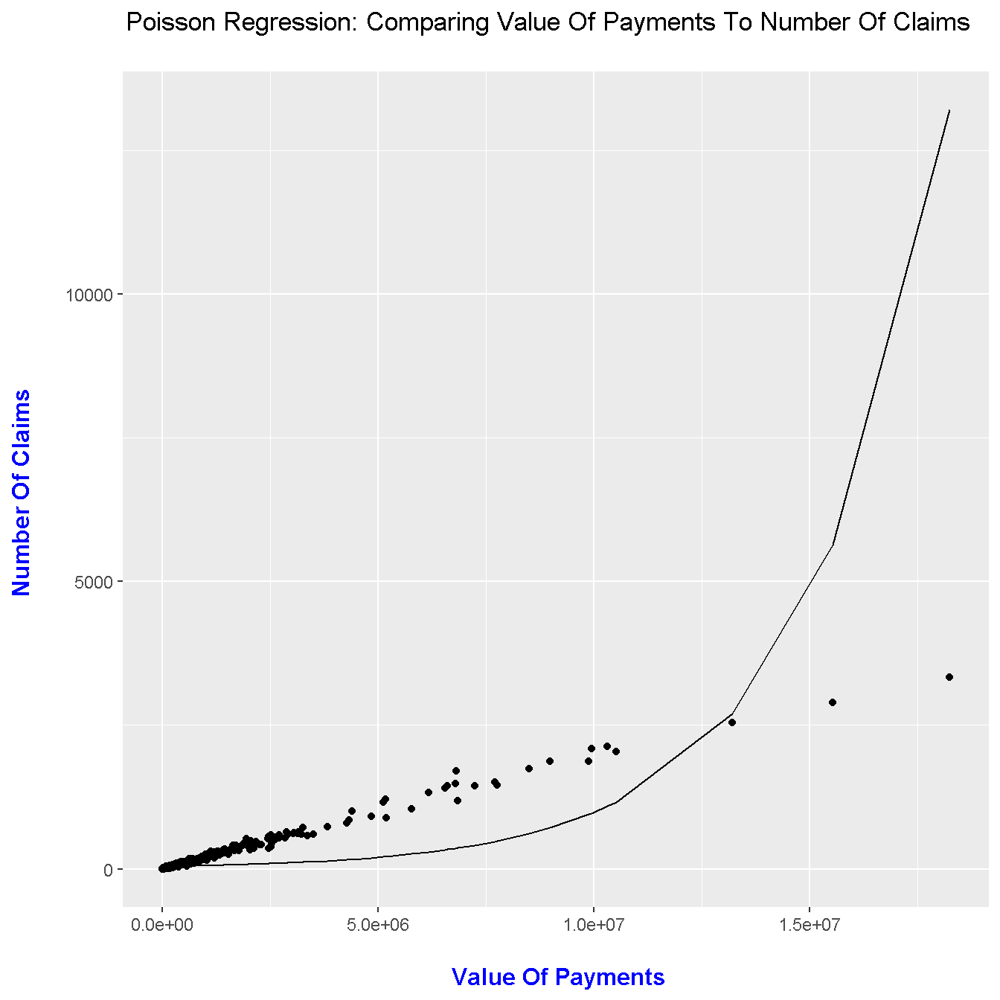

Hi there. Here is some experimental work that I have done with Poisson regression in R.
In ordinary least squares regression, the errors/residuals are assumed to be normally distributed and the responses are continuous (real numbers).
\[Y = \beta_{0} + \beta_{1}x_{1} + \beta_{2}x_{2} + ... + \beta_{n}x_{n} + \epsilon\]
In Poisson regression, the errors are not normally distributed and the responses are counts (discrete). The errors follow a Poisson distribution and we model the (natural) logarithm of the response variable. That is, we have \(\ln(\mu)\) with \(\mu = \text{e}^{Y}\) instead of just Y for the response variable. A link function is used to achieve the linear form.
In R, I work with a motor insurance dataset from the faraway library. I am interested to see the relationship of number of insurance claims based on the payments (in Swedish Kronas) through a plot.
Here is the code and plot. (Use ?motorins to find documentation about the dataset.)
# Example:
library(faraway)
library(ggplot2)
# Third Party Motor Insurance Claims In Sweden (1977)
data(motorins)
head(motorins)## Kilometres Zone Bonus Make Insured Claims Payment perd
## 1 1 1 1 1 455.13 108 392491 3634.176
## 2 1 1 1 2 69.17 19 46221 2432.684
## 3 1 1 1 3 72.88 13 15694 1207.231
## 4 1 1 1 4 1292.39 124 422201 3404.847
## 5 1 1 1 5 191.01 40 119373 2984.325
## 6 1 1 1 6 477.66 57 170913 2998.474
Fitting A Poisson Model
The Poisson model belongs to a class of generalized linear models (GLMs). In R, the glm() function along with having family = poisson is used to fit a Poisson model to the data.
# Making The Number Of Claims As Dependent Variable Y, Total Value Of Payments as "X":
poisson_model <- glm(Claims ~ Payment, family = poisson, data = motorins)
summary(poisson_model)##
## Call:
## glm(formula = Claims ~ Payment, family = poisson, data = motorins)
##
## Deviance Residuals:
## Min 1Q Median 3Q Max
## -102.782 -7.947 -6.411 -2.388 51.007
##
## Coefficients:
## Estimate Std. Error z value Pr(>|z|)
## (Intercept) 3.748e+00 3.512e-03 1067.1 <2e-16 ***
## Payment 3.147e-07 4.460e-10 705.6 <2e-16 ***
## ---
## Signif. codes: 0 '***' 0.001 '**' 0.01 '*' 0.05 '.' 0.1 ' ' 1
##
## (Dispersion parameter for poisson family taken to be 1)
##
## Null deviance: 391567 on 1796 degrees of freedom
## Residual deviance: 182358 on 1795 degrees of freedom
## AIC: 190000
##
## Number of Fisher Scoring iterations: 6
A ggplot2 Plot
poisson_model$model$fitted <- predict(poisson_model, type = "response")
# ggplot2 Plot:
ggplot(poisson_model$model) +
geom_point(aes(Payment, Claims)) +
geom_line(aes(Payment, fitted)) +
labs(x = "\n Value Of Payments", y = "Number Of Claims \n",
title = "Poisson Regression: Comparing Value Of Payments To Number Of Claims \n") +
theme(plot.title = element_text(hjust = 0.5),
axis.title.x = element_text(face="bold", colour="blue", size = 12),
axis.title.y = element_text(face="bold", colour="blue", size = 12))